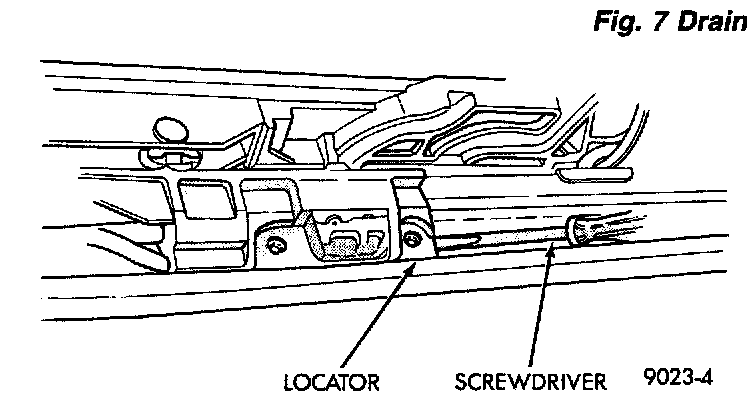

Drive Cable Locators
DRIVE CABLE LOCATORSREMOVAL
1. Position glass 19 mm (0.75 in.) until rearward cable locator is visible.
2. Remove screws holding drive cable locator to unit.
3. Remove travel limiting micro switch grommet and disconnect wire connector.

4. Insert a small screwdriver under rear edge of locator and pry locator from track.
INSTALLATION
1. Reverse preceding operation. The small out board lip underneath cable locator slips under bottom slot on guide track. After locator is seated, install screws.